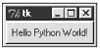
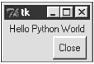

| < BACK | Make Note | Bookmark | CONTINUE > |
Tkinter
As you saw in the previous chapter, other options exist for GUI projects using Python. However, at this moment, Python has chosen to support Tkinter as its official GUI implementation.
Tkinter is a standard object-oriented interface to the Tk GUI API, which was originally written by Steen Lumholdt when he was in need for improving his GUI work with Python. In this chapter, you will see how easy it is to subclass Tk widgets using Python's facilities. Some say that it is even easier than when using Tcl's capabilities.
Don't worry. You don't need to know a thing about Tcl before start learning Tkinter—the only possible case is if you need to go through the Tcl/Tk documentation.
Tkinter is a mature cross-platform interface that provides a small set of basic widgets for your GUI applications. But this doesn't mean that you need to get stuck on that set. Tkinter is extensible, which means that you can use third-party widget packages as well. A Widget is a user interface element, such as a list box or a radio button.
The only possible disadvantage of using Tkinter is the fact that it uses Tcl to make the calls to Tk. This middle step can slow down some programs.
The Tkinter toolkit is a powerful GUI framework that allows Python programs to work on Windows, UNIX, and Macintosh platforms. The main difference between Tkinter and other toolkits is the portability issue. Almost all other toolkits are good in some specific systems only. For example, KDE bindings (Linux), Pythonwin/MFC (Windows), and Mac toolbox bindings (Macs) are GUI implementations that provide support only for a specific platform. On the other hand, Tkinter allows you to write code that can run in many platforms without a single change.
Tkinter proves that the interface design of an application can be created separate from the application's business routines. When you choose Tkinter to be your GUI environment, you basically have to worry about where to put the right widgets and how to perfectly design your application. Another feature that it provides is a set of geometry management functions available to help you arrange the widgets all around the interface. After you finish with the visual design, you just need to bind the widget actions to the specific functions that you need to call, and voil´a! Your graphical interface is ready.
Tkinter enables you to handle buttons and windows and define their properties in a glance. After designing and implementing your interface, it is possible to change the business functions of your application without changing one line of your GUI code. Isn't it great?
Some time ago, there wasn't almost any documentation available for Tkinter. However, since it became the standard Python GUI, a lot of material has been released about this toolkit. See the resources section at the end of this chapter for details.
Checking the Installation
Beginning with version 1.5.2, Tkinter has become part of the Windows binary distribution. Tkinter has been included with most UNIX distribution for a long time. The Tkinter package contains all necessary classes, constants, and functions that are required to wrap and use the Tk toolkit.
If you are running Microsoft Windows, the Python installer for Windows (version 1.5.2) comes with the version 8.0.5 of the Tcl/Tk installer. The same thing goes to Mac users.
If you are running any UNIX system, you must download, build, and install both Tcl and Tk from the source. You can download the files from http://dev.scriptics.com/software/tcltk/8.0.html. Follow the instructions contained in the README files, and the process should be very simple; that is, if you don't already have it installed (which most free UNIX-like systems do these days).
If for some reason, your need to download the latest version of Tcl/Tk, the files are available at http://dev.scriptics.com/. As I said before, depending on your platform, you can get binaries instead of downloading and compiling the source code.
Once you have Tkinter running in your system, you will find a low-level interface module called _tkinter that can be a DLL, a shared library, or statically linked to your interpreter; it all depends on your system. Note that _tkinter is mainly just a Python interface to the Tcl interpreter. On top of this low-level module, you have the Tkinter module, which is more readable, and is written in 100% pure Python. This module is the main module of the Tkinter package, and it imports a lot of other helper modules when it is imported, including Tkconstants.
Sometime ago, Windows users who had problems involving multiple copies of the Tcl/Tk DLLs floating around the system needed to have special attention when installing Tcl/Tk. Now, they can rest on fixtk, which is a utility that tries to locate the Tcl/Tk 8.0 DLLs on Windows systems.
Hello Python World
Now that you have your Tkinter installation ready to go, you just need to import the Tkinter module to start playing around with your system.
If you are using Windows, I suggest that you save files with the .pyw extension in order to have it executed by pythonw.exe, which doesn't open the interpreter console. On the other hand, if you decide to keep the .py extension, your GUI scripts will be executed by the command line interpreter (python.exe), which opens a DOS console.
The next program implements a simple Hello Python World example.
import Tkinter import sys win = Tkinter.Tk() b = Tkinter.Button(win, text="Hello Python World!",command=sys.exit) b.pack() win.mainloop()
Note that we only use the Tk() method to create the main window for the application. To run this program, just call the script as you usually do with any other script. To quit the program, you just need to close the window. Figure 15.1 shows how this program looks in a Window system. Remember that other windows can be created as Toplevels.
Figure 15.1. This figure shows a Tkinter implementation of the standard Hello World example.
The next example uses a convenient way to load the Tkinter module (from Tkinter import *). Because this module only exposes names that are associated to GUI objects (such as button and Frame), you don't need to worry that much about namespace conflicts with your applications, and it becomes easier to read the code. Another feature shown in this example is that we can use a Toplevel instance instead of a Tk instance to store other widgets.
from Tkinter import * root = Tk() win = Toplevel(root) win.pack() Label(win, text= "Hello Python World" ).pack(side=TOP) Button(win, text="Close", command=win.quit).pack(side=RIGHT) win.mainloop()
You could have used win = Frame() instead of win.Toplevel(root). However, given that a frame acts differently depending on whether it has a parent or not (either a toplevel or just a widget to help with packing), this wouldn't be such a good idea.
Figure 15.2 shows how this code looks when it is executed.
Figure 15.2. This figure shows a small variation of the previous Hello World example.
OK, now let's see what is really happening in both examples. First, we have to import the Tkinter module. Then, we have to create a widget to hold the other objects. (In the first example we used a top-level window by calling the Tk() method and in the second one we used an instance of the Toplevel widget). Creating another Tk() instance is really starting up another instance of Tk—it is less expensive to create a Toplevel.
When we have a background, we can start adding widgets to it. In the first example, we added a single button, and in the second one, we added two widgets: a label and a button.
You don't necessarily associate a widget with its toplevel—you associate it with its parent widget (if you are adding a Button to a Frame that is a child of a Toplevel, you would pass the frame as the first argument). It is also necessary to pack the widgets in order to display them in the window. This last process is part of a concept called geometry management, which is used to manage the position and layout of widgets.
Both examples demonstrate how you can bind actions to the events that can occur in your widget. Here, we are using a specific attribute called command for this purpose. You can use keyword arguments to transport several attributes and their values to a widget, which is a simple way to handle multiple attributes.
The last thing that we need to do is to start an event loop. Note that the application only appears when you start the loop engine. Regular Python scripts are executed top to bottom, and when the last line of code is executed, the program quits. We don't want this kind of behavior in a GUI application. Therefore, we need to call the mainloop() method of the top-level window of our application. This method keeps the GUI indefinitely running until the window is closed. This loop is responsible for redrawing the window widgets whenever it becomes necessary, for handling events (such as key presses and mouse clicks), and for managing Tkinter operations, such as all the geometry management functions.
Note that the version of Tkinter shipped along with Python 2.0 also provides support for Unicode characters because Tkinter is now able to display Unicode string in Tk widgets. Talking about Python 2.0, Tkinter had some optimizations done in order to make some operations much faster. It is also good to mention that the support for Tcl/Tk 7.X versions has been dropped in this latest release.
| Last updated on 1/30/2002 Python Developer's Handbook, © 2002 Sams Publishing |
| < BACK | Make Note | Bookmark | CONTINUE > |